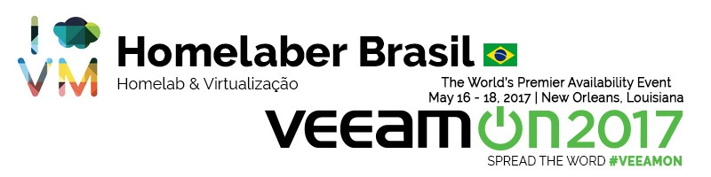

Diário #VeeamON - Bloggers Meeting - Dia 2
VeeamON 17Compartilhe esse post nas redes sociais...

Olá Homelabers! No post de hoje, vou contar um pouco de como foi a Bloggers Meeting promovida pela Veeam. Foi uma reunião a portas fechadas, somente para Bloggers cadastrados e Veeam Vanguards.
Bloggers Meeting
16/05/2017
Na terça-feira dei uma fugidinha do treinamento pela manhã para participar de uma sessão para bloggers e Vanguards, promovida pela Veeam.
Veeam Availability Orchestrator (VAO)
A reunião teve inicio com o Michael White (@mwVme) falando sobre Veeam Availability Orchestrator (VAO), features que estão para ser lançadas, etc. Confesso que não sou o maior conhecedor do portfólio de produtos da Veeam, mas esse VAO me chamou a atenção, só que é um produto mais voltado para grandes ambientes. Pelo que pude entender e estudar posteriormente, o VAO é um produto que ajuda a orquestrar e automatizar fail over de disaster recovery.
Michel falou também bastante sobre BC e DR (business continuity e disaster recovery), contado casos e situações vivenciadas por ele em diversos clientes. Esse é um assunto bastante interessante e que deve ser tratado com bastante “carinho” e cuidado por qualquer empresa e nós profissionais de infraestrutura, devemos conhecer bem esse assunto.
Outros pontos que me chamaram a atenção do VAO foram:
* **Documentação Dinâmica** - o software tem a capacidade de gerar automaticamente uma documentação totalmente customizada de seu ambiente e seu plano de recuperação de desastres.
* **Testes Automáticos** - você pode configurar testes de recovery automáticos de todo o ambiente, uma aplicação, etc.
* **Recuperação Confiável** - o software garante um a recuperação de todo o set de aplicações configuradas, garantindo a confiabilidade de seus backups.
Veeam Availability Console (VAC)
Depois foi a vez de Clint Wyckoff (@ClintWyckoff) falar sobre o RC (release candidate) do produto **Veeam Availability Console (VAC). **Veeam Agent for MicrosoftClint fez uma apresentação - sem ppt - mostrando as features e evoluções do produto ao longo do período de desenvolvimento. O VAC é uma solução centralizada para gerenciamento para empresas GRANDES e VSPs (Veeam Service Providers) para gerenciar, distribuir e configurar os servidores de Veeam Backup & Replication e os novos produtos Veeam Agent for Windows e Veeam Agent for Linux. (mais sobre esses dois produtos nos próximos posts).
Ao final das apresentações, houve uma conversa muito boa com o Rick Vanover sobre o futuro dos grupos de usuários técnicos, VMUG, Veeam User Group, etc. Foram discutidas maneiras de se melhorar os grupos, as interações, conteúdos, etc. Papo muito bom, que vai render novidades por aqui em breve!
Depois rolou um almoço com todos os participantes e eu voltei correndo ao hotel para pegar a parte final do treinamento do VMCE.
Algumas fotos do dia:
[caption id="attachment_2952” align="aligncenter” width="800”] Michael White (@mwVme)[/caption]
[caption id="attachment_2953” align="aligncenter” width="800”] Bloggers e Veeam Vanguards[/caption]
[caption id="attachment_2954” align="aligncenter” width="800”] Paul Braren (@paulbraren) do blog TinkerTry.com[/caption]
https://twitter.com/paulbraren/status/864533183714537473
[gallery type="slideshow” link="none” columns="2” size="full” ids="2955,2956,2957,2958”]
É isso pessoal! No próximo post, vou falar sobre o primeiro dia de fato - a General Session e algumas sessões que eu atendi.
Até a próxima!
–VC
Compartilhe esse post nas redes sociais...Valdecir Carvalho
Nerd e pai orgulhoso da Mariana e João. Profissional Sênior de TI com foco em arquitetura de infraestrutura e cloud computing. Blogueiro, podcaster, palestrante, amante de comunidades técnicas, fotógrafo aposentado e adora jogos antigos.
#vExpert · #VMUGLeader · #VUGBrasil · #vBronwBagBrasil · #VeeamVanguard